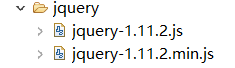

使用Jquery的准备工作：
1.把Jquery文件引入到项目中（注意：Jquery文件有很多迭代版本，不一定要和这里的版本一样）

2.在html中引入Jquery文件
<!-- 2、引入Jquery -->
<script type="text/javascript" src="../jquery/jquery-1.11.2.min.js"></script>
一、万能的$
$是一个对象，也是一个方法
1.1直接获取页面的元素
$("选择器") 例:$("#id值")
<script type="text/javascript">
$(function() {
$("#btn");//获取id为btn的标签
$(".btn");//获取所有class为btn的标签
$("p");//获取所有p标签
$("input[name=hobbies]");//获取所有name属性为hobbies的input标签
$("tr:even");//获取所有下标为偶数的tr标签
......
});
</script>
1.2 dom就绪后执行相应的代码
window.onload = function(){...} -> 页面加载完毕后执行(所有数据请取完毕)
window.onload = function(){
//1.可以获取当前页面中的元素
var mydiv = $("#mydiv");
console.debug(mydiv);
}$(function(){...}) -> dom加载就绪(只需要读取到标签与属性即可【速度更快，性能更好】)
$(function(){
//1.可以获取当前页的元素
// jQuery的方案获取的元素
var mydiv = $("#mydiv");
console.debug(mydiv);
})
1.3 原生的dom对象和jQuery对象互转
jQuery对象的功能更加强大 【object{...}】，是一个伪数组(它不是数组，但是可以当作数组用，数组中装的就是原生对象)
1、把原生对象转成jQuery对象
$(function(){
console.debug($(mydivDom));
})
2、把jQuery对象转成原生对象
$(function(){
console.debug(mydiv[0]);
console.debug(mydiv.get(0));
})
1.4 直接创建dom元素 原本：document.createElement("div");
var div = $("<div><span>sdfasdfsdf</span></div>");
1.5 直接调用相应的方法 $.get(..)/$.parseJSON(..)
console.debug($.isNumeric(5));
console.debug($.isNumeric("5z"));
二、选择器
2.1基本选择器(id,class,标签,多选择器)
<script type="text/javascript">
$(function(){
//id选择器,必需加一个#
console.debug($("#monkey"));
//class(类)选择器,必需加一个.
console.debug($(".animal"));
//标签选择器
console.debug($("li"));
//* 匹配所有元素
console.debug($("*"));
//多选择器(可以组合所有选择器)
console.debug($("#monkey,.snake"));
})
</script>
2.1层级选择器(父子，后代)
<!DOCTYPE html>
<html>
<head>
<meta charset="UTF-8">
<title>Insert title here</title>
<!-- 引入一个jQuery文件 -->
<script type="text/javascript" src="jquery/jquery-1.11.2.js"></script>
<script type="text/javascript">
$(function(){
//拿到 #book这个选择器里面的所有li (后代选择器)
console.debug($("#book li"))
//拿到 #book这个选择器里面 第一层li (儿子选择器)
console.debug($("#book>li"));
})
</script>
</head>
<body>
<ul id="book">
<li>
四大名著
<ul>
<li>西游记</li>
<li>水浒传</li>
<li>三国演义</li>
<li>红楼梦</li>
</ul>
</li>
<li>西施</li>
<li>貂蝉</li>
<li>王昭君</li>
<li>杨玉环</li>
</ul>
<ul>
<li class="animal">白龙马</li>
<li class="animal" id="monkey">孙悟空</li>
<li class="animal">猪八戒</li>
<li>沙悟净</li>
</ul>
<ul>
<li class="snake">黄鸟</li>
<li class="snake">白鸟</li>
<li>绿鸟</li>
<li>红鸟</li>
</ul>
</body>
</html>2.3伪类选择器
<!DOCTYPE html>
<html>
<head>
<meta charset="UTF-8">
<title>Insert title here</title>
<!-- 引入一个jQuery文件 -->
<script type="text/javascript" src="jquery/jquery-1.11.2.js"></script>
<script type="text/javascript">
$(function(){
//伪类选择器
//:first -> 只拿第一个元素
console.debug($("li:first"));
//:eq(index) -> 确定拿第几个 index:下标
console.debug($("li:eq(3)"));
})
</script>
</head>
<body>
<ul id="book">
<li>
四大名著
<ul>
<li>西游记</li>
<li>水浒传</li>
<li>三国演义</li>
<li>红楼梦</li>
</ul>
</li>
<li>西施</li>
<li>貂蝉</li>
<li>王昭君</li>
<li>杨玉环</li>
</ul>
<ul>
<li class="animal">白龙马</li>
<li class="animal" id="monkey">孙悟空</li>
<li class="animal">猪八戒</li>
<li>沙悟净</li>
</ul>
<ul>
<li class="snake">黄鸟</li>
<li class="snake">白鸟</li>
<li>绿鸟</li>
<li>红鸟</li>
</ul>
</body>
</html>2.4属性选择器 -> $(div[name])/$(div[name=xx])
<!DOCTYPE html>
<html>
<head>
<meta charset="UTF-8">
<title>Insert title here</title>
<!-- 引入一个jQuery文件 -->
<script type="text/javascript" src="jquery/jquery-1.11.2.js"></script>
<script type="text/javascript">
$(function(){
//属性选择器
console.debug($("li[class]"));
console.debug($("li[name='mei']"));
})
</script>
</head>
<body>
<ul id="book">
<li>
四大名著
<ul>
<li>西游记</li>
<li>水浒传</li>
<li>三国演义</li>
<li>红楼梦</li>
</ul>
</li>
<li name="xi">西施</li>
<li name="diao">貂蝉</li>
<li name="zhao">王昭君</li>
<li>杨玉环</li>
</ul>
<ul>
<li class="animal">白龙马</li>
<li class="animal" id="monkey">孙悟空</li>
<li class="animal">猪八戒</li>
<li>沙悟净</li>
</ul>
<ul>
<li class="snake">黄鸟</li>
<li class="snake">白鸟</li>
<li>绿鸟</li>
<li>红鸟</li>
</ul>
</body>
</html>
三、事件注册
$(元素).click(function(){...})
$(元素).bind("click",function(){...}) / unbind
$(元素).on("click",function(){...}) / off
=============事件委派===========
$("#userTbody").on("click",".del",function(){})
监听tbody的点击事件,当你点击的位置(元素)符合 .del -> 就触发事件
//on("绑定的事件","需要满足的条件",满足条件执行的函数（方法）)
$("#userTbody").on("click",".del",function(){
//parent():找到元素的父元素
//$(this).parent().parent().remove();
//closest:从元素本身开始，逐级向上级元素匹配，并返回最先匹配的元素。。
$(this).closest("tr").remove();
})
四、列举
1、each() -> 遍历咱们的元素
jQuery对象.each(function(index,ele){
//index:遍历的下标
//ele:遍历的每一个元素
})
2、length -> 一个jQuery元素(伪数组)的长度
jQuery对象.length/jQuery.size()
3、attr/prop -> 获取与设置某个元素的属性
prop:支持多选与单选(attr支持有问题)
var 属性值 = jQuery元素.attr/prop("属性名");
jQuery元素.attr/prop("属性名","属性值");
4、HTML代码/文本/值
var html = jQuery对象.html() -> 获取一个对象中的所有html的内容
jQuery对象.html("<div>xxx</div>") -> 设置一个对象中的所有html的内容
//val只用于设置表单元素(input,textarea,select)的值
var html = jQuery对象.val()
jQuery对象.val("<div>xxx</div>")
5、css -> 获取与设置元素的某个样式
jQuery元素.css("样式名","样式值");
jQuery元素.css("background-color","red");
6、文本操作
jQuery元素.append("元素"); -> 把括号中的元素放到jQuery元素中
jQuery元素.appendTo("元素"); -> 把jQuery元素追加到元素中
jQuery元素.empty():清空所有子元素
jQuery元素.remove():删除自己
jQuery元素.clone([true/false]):当前元素复制一下 (加true可以连事件一起复制)
7、查询
jQuery元素.closest("条件") -> 从当前元素向上查询,找到第一个满足条件的元素为止
jQuery元素.parent() -> 找到当前元素的父元素
8、ready(fn) :页面载入 [dom就绪后执行相应的代码]
$(function(){...})
五、代码案例
1、案例一：
<!DOCTYPE html PUBLIC "-//W3C//DTD HTML 4.01 Transitional//EN" "http://www.w3.org/TR/html4/loose.dtd">
<html>
<head>
<meta http-equiv="Content-Type" content="text/html; charset=UTF-8">
<title>用户新增测试</title>
<script language="javascript" src="../jquery/jquery-1.11.2.min.js"></script>
<script language="javascript">
$(function(){
//提交
$("#btn_submit").on("click",function(){
var un=$("#username").val();
var em=$("#email").val();
var tel=$("#tel").val();
//append("内容"):在调用该方法的标签中的内容后面加入指定的内容
//prepend("内容"):在调用该方法的标签中的内容前面加入指定的内容
$("#userTbody").append("<tr><td>"+un+"</td><td>"+em+"</td><td>"+tel+"</td><td><button class='del'>删除</button></td></tr>");
})
//删除所有
$("#btn_removeAll").on("click",function(){
//删除tbody的所有子元素
$("#userTbody").empty();
})
//删除单条数据
//on("绑定的事件","需要满足的条件",满足条件执行的函数（方法）)
$("#userTbody").on("click",".del",function(){
//parent():找到元素的父元素
//$(this).parent().parent().remove();
//closest:从元素本身开始，逐级向上级元素匹配，并返回最先匹配的元素。。
$(this).closest("tr").remove();
})
});
</script>
</head>
<body>
<a href="http://www.itsource.cn">首页</a>
<form name="userForm">
<center>
用户录入<br/>
用户名:<input id="username" name="username" type="text"/>
E-mail:<input id="email" name="email" type="text"/>
电话:<input id="tel" name="tel" type="text"/>
<input type="button" value="提交" id="btn_submit"/>
<input type="button" value="删除所有" id="btn_removeAll"/>
</center>
</form>
<hr/>
<table border="1" align="center">
<thead>
<tr>
<th>用户名</th>
<th>E-mail</th>
<th>电话</th>
<th>操作</th>
</tr>
</thead>
<tbody id="userTbody">
</tbody>
</table>
</body>
</html>2、案例二：
<!DOCTYPE html PUBLIC "-//W3C//DTD HTML 4.01 Transitional//EN" "http://www.w3.org/TR/html4/loose.dtd">
<html>
<head>
<meta http-equiv="Content-Type" content="text/html; charset=UTF-8">
<title>jquery练习</title>
<script type="text/javascript" src="../jquery/jquery-1.11.2.min.js"></script>
<script type="text/javascript">
$(function() {
$("#btn1").on("click",function(){
$("#select").val("2号");
})
//下拉框
$("#btn2").on("click",function(){
//选中下拉框中value值为2号和5号的选项
$("#selectMultiple").val(["2号","5号"]);
})
//复选框
$("#btn3").on("click",function(){
//选中复选框中value值为复选2和复选4的选项
$("input[name=checkbox]").val(["复选2","复选4"]);
})
//单选框
$("#btn4").on("click",function(){
//单选框2的下标是1
$("input[name=radio]").get(1).checked=true;
})
$("#btn5").on("click",function(){
console.debug($(":checked"));
})
});
</script>
</head>
<body>
<input id="btn1" type="button" value="使单选下拉框‘2号’选中"/><br/>
<input id="btn2" type="button" value="使多选下拉框‘2号’和‘5号’选中"/><br/>
<input id="btn3" type="button" value="使复选框‘2号’和‘4号’选中"/><br/>
<input id="btn4" type="button" value="使单选框‘单选2’选中"/><br/>
<input id="btn5" type="button" value="打印已被选中的值"/><br/>
<form name="userForm">
单选下拉框<select id="select" name="select">
<option value="1号">1号</option>
<option value="2号">2号</option>
<option value="3号">3号</option>
<option value="4号">4号</option>
<option value="5号">5号</option>
<option value="6号">6号</option>
</select>
多选下拉框<select id="selectMultiple" multiple="multiple" size="6" name="selectMultiple">
<option value="1号">01号</option>
<option value="2号">02号</option>
<option value="3号">03号</option>
<option value="4号">04号</option>
<option value="5号">05号</option>
<option value="6号">06号</option>
</select>
<br/>
复选框<input value="复选1" type="checkbox" name="checkbox"/>复选1
<input value="复选2" type="checkbox" name="checkbox"/>复选2
<input value="复选3" type="checkbox" name="checkbox"/>复选3
<input value="复选4" type="checkbox" name="checkbox"/>复选4
<input value="复选5" type="checkbox" name="checkbox"/>复选5
<br/>
单选框<input value="单选1" type="radio" name="radio"/>单选1
<input value="单选2" type="radio" name="radio"/>单选2
<input value="单选3" type="radio" name="radio"/>单选3
<input value="单选4" type="radio" name="radio"/>单选4
</form>
</body>
</html>